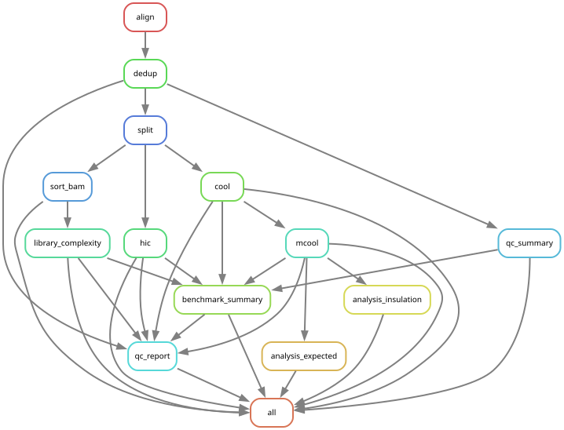

Infra test
Rule
workflows/MicroCPipe.snakefile
## Merge the group's runs, mark/remove duplicates, collect stats
rule dedup:
input:
lambda w: expand(OUT + "/{{group}}/aligned/{run}.pairsam.gz", run=RUNS_BY_GROUP[w.group]),
output:
pairsam = temp(OUT + "/{group}/{group}_dedup.pairsam.gz"),
stats = OUT + "/{group}/{group}_dedup_stats.txt",
log:
OUT + "/{group}/logs/{group}_dedup.log"
benchmark:
OUT + "/{group}/benchmarks/{group}_dedup.tsv"
threads: 16
conda: ENVS + "/microc_align.yml"
params:
tmpdir = OUT + "/{group}/tmp_dedup",
shell:
"""
: > {log}
mkdir -p {params.tmpdir}
pairtools merge --tmpdir {params.tmpdir} --nproc {threads} {input} 2>> {log} | \
pairtools dedup --nproc-in {threads} --nproc-out {threads} --mark-dups \
--output-stats {output.stats} --output {output.pairsam} 2>> {log}
rm -rf {params.tmpdir}
"""
MicroCPipe, lines 103-126 view on GitHub
Nested rule
workflows/rules/processing.smk
rule fastp:
input:
reads = raw_reads,
output:
r1 = temp(TRIM_R.replace("{mate}", "1")),
r2 = temp(TRIM_R.replace("{mate}", "2")),
json = FASTP_JSON,
html = OUT + "/{sample}/stats/{sample}_fastp.html",
log:
OUT + "/{sample}/logs/fastp.log",
benchmark:
OUT + "/{sample}/benchmarks/fastp.tsv",
threads: 8
conda: ENVS + "/ttpipe_align.yml"
params:
extra = config.get("fastp_extra", ""),
shell:
"""
fastp -i {input.reads[0]} -I {input.reads[1]} -o {output.r1} -O {output.r2} \
-w {threads} -j {output.json} -h {output.html} {params.extra} > {log} 2>&1
"""
TTpipe, lines 71-91 view on GitHub
Def
workflows/MicroCPipe.snakefile
##### Hooks for rules/formats.smk #####
def get_pairs(wildcards):
return f"{OUT}/{wildcards.group}/{wildcards.group}.pairs.gz"
MicroCPipe, lines 263-265 view on GitHub
Lines
config/ChromSimConfig.test.yaml
## Sample sheet
## Tab-separated; one row per experimental sample. Required columns:
## CTCF_Peaks - CTCF peak file (narrowPeak/BED); 'NA' if this sample has none
## Hi-C - Hi-C map to compare simulations against: .hic, .mcool (must
## contain the `resolution` below) or .cool; 'NA' if none
## Every other column is free-form metadata (Project, Cell_Type, Condition, ...).
## Paths may be absolute, or relative to the repo root. The shipped samplesheet
## uses data/<file> with each cluster's files linked into data/ (see
## data/README.md), so one samplesheet works on every cluster; with one cluster,
## full paths are just as good.
samplesheet: 'ChromSimSamplesheet.txt'
## Columns joined with '_' to build each sample's name. Conditions below refer
## to samples by this name (ctcf_type / compare_hic).
ChromSimPipe, lines 12-25 view on GitHub
Missing
WarningSnippet not found
no rule, checkpoint or def named 'nope' in pipelines/microcpipe/workflows/MicroCPipe.snakefile
WarningSnippet not found
stopping-points/stopB/Snakefile does not exist (yet)
Generated text
$ snakemake -n -s workflows/MicroCPipe.snakefile --cores 1 --configfile config/MicroCConfig.yaml tests/dryrun/config.yaml
Config file config/MicroCConfig.yaml is extended by additional config specified via the command line.
Building DAG of jobs...
Job stats:
job count
------------------- -------
align 3
all 1
analysis_expected 2
analysis_insulation 2
benchmark_summary 1
cool 2
dedup 2
hic 2
library_complexity 2
mcool 2
qc_report 1
qc_summary 2
sort_bam 2
split 2
total 26
...Graph

Missing output
NoteOutput not here yet
This output (regpipe-dryrun) is made from the course data. Once data/ is in place, run quarto render and it appears here. Until then, run the command yourself and compare.
Exercise
TipExercise 1.2: Predict the jobs
Text.
ImportantStopping point A
Stop here.